class: center, middle, inverse, title-slide .title[ # Statistical Society of Australia<br> Victorian & Tasmanian Branch ] .subtitle[ ## Mentoring Event ] .author[ ### <p></p> ] .date[ ### 25 June 2026 ] --- layout: true .footnote[ <img style="vertical-align:middle" src='images/logo/other/png_transparent/SSA_Monogram_Navy-White.png' height='40px'/> These slides are available at https://statsocaus.github.io/vic/intro/2026-06-25-mentoring-event.html ] <style type="text/css"> .speaker-photo { width: 150px; border: 3px solid black; border-radius: 5px; } </style> --- class: inverse middle # Welcome! --- # Acknowledgement of Country <!-- https://www.statsoc.org.au/Guidelines --> <br><br> .w-70[ We acknowledge that we are on the lands of the Wurundjeri and Boonwurrung peoples of the Kulin nation and who have been custodians of this land for thousands of years, and acknowledge and pay our respects to their Elders past and present. <br> <!-- We extend our welcome also to the traditional owners of the lands from which people in our livestream are joining. --> ] --- name: council # 👋 SSA Vic & Tas Council 2026 .flex[ .w-20[ .person.f6[ .circle-image-120[ <img src='images/council/elena.jpg'>] **President** Elena Tartaglia ] ] .w-20[ .person.f6[ .circle-image-120[ <img src='images/council/alun.jpg'>] **Vice-President** Alun Pope ] ] .w-20[ .person.f6[ .circle-image-120[ <img src='images/council/shuwen_hu.jpeg'>] **Secretary** Shuwen Hu ] ] .w-20[ .person.f6[ .circle-image-120[ <img src='images/council/rick_tankard.png'>] **Treasurer** Rick Tankard <i class='fab fa-twitter'></i>@RickTankard] ] .w-20[ .person.f6[ .circle-image-120[ <img src='images/council/ninh_tran.jpg'>] **Membership Officer** Ninh Tran ] ] .w-20[ .person.f6[ .circle-image-120[ <img src='images/council/victorino_marquez_grajales.jpeg'>] **Communications Officer** Victorino Marquez Grajales ] ] .w-20[ .person.f6[ .circle-image-120[ <img src='images/council/tong-chen.jpeg'>] **ECSS Rep** Tong Chen ] ] ] .flex[ .w-20[ .person.f6[ .circle-image-120[ <img src='images/council/sara_goliath.png'>] **Industry Rep** Sara Goliath ] ] .w-20[ .person.f6[ .circle-image-120[ <img src='images/council/shane_richards.jpeg'>] **Tasmanian Rep** Shane Richards ] ] .w-20[ .person.f6[ .circle-image-120[ <img src='images/council/ryan_covey.jpg'>] **Deputy Secretary** Ryan Covey ] ] .w-20[ .person.f6[ .circle-image-120[ <img src='images/council/anna.jpg'>] **Deputy Treasurer** Anna Wilkinson <i class='fab fa-twitter'></i>@AnnaLWil] ] .w-20[ .person.f6[ .circle-image-120[ <img src='images/council/susan_wei.jpg'>] **Deputy Membership Officer** Susan Wei ] ] .w-20[ .person.f6[ .circle-image-120[ <img src='images/council/hien_nguyen.png'>] **Deputy Comms Officer** Hien Nguyen ] ] ] .center[ **Thank you to tonight's event organisers: Sara, Tong and Elena.** ] --- name: contact # Membership * Annual fee * $25 for students * $290 for full members * [Recent graduates, ABS employees, and retired members are eligible for discounts](https://statsoc.org.au/Forum-general-topics/12893603)! * Benefits include * Discounts on paid events and workshops * Mentoring program * ECSS Funding schemes * End of year ECSS Social Event --- # Upcoming events - <i class="fas fa-calendar"></i> **Wednesday 1 July, 8 am** *Meet the Council* <br> In-person, Anda Cafe (near Parliament Station) <br> - <i class="fas fa-calendar"></i> **August** *Social event with R Ladies Melbourne* <br> In-person, Melbourne CBD. <br> - <i class="fas fa-calendar"></i> **November** *Belz Lecture and ECSS Showcase* <br> In-person, University of Melbourne. --- # Schedule .pull-left[ | Time | Activity | | ----- | ----- | | 7:30 | Intro slides and Mentor introductions | | 7:40 | First round | | 7:50 | Second round | | ... | ... | | 8:50 | Last round | | 9:00 | Wrap up and reset the room. Kick-ons at Brunetti's? | | 9:30 | Room booking ends ] .pull-right[ Instructions - One mentor, 2-3 mentees per table - Chat for 10 minutes, then mentors will move to next table <br> Catering - Help yourself to food and drinks! ] --- # Mentor introductions .flex[ .w-20[ .person.f6[ .circle-image-120[ <img src='images/anna_quaglieri.png'>] **Anna Quaglieri** Senior Bioinformatics Data Scientist, Mass Dynamics ] ] .w-20[ .person.f6[ .circle-image-120[ <img src='images/humberto jimenez.jpg'>] **Humberto Jimenez** Manager in the Digital & Technology Advisory team, BDO ] ] .w-20[ .person.f6[ .circle-image-120[ <img src='images/logo/main_use/SSA_Logotype_MAIN USE.jpg'>] **Jason Rennie** Data Scientist, Department of Energy, Environment and Climate Action ] ] .w-20[ .person.f6[ .circle-image-120[ <img src='images/lizzie_silver.jpeg'>] **Lizzie Silver** Senior Data Scientist, WSP Digital ] ] ] .flex[ .w-20[ .person.f6[ .circle-image-120[ <img src='images/lyle-gurrin.jpeg'>] **Lyle C. Gurrin** Professor of Biostatistics, University of Melbourne ] ] .w-20[ .person.f6[ .circle-image-120[ <img src='images/stella_stylianou.jpg'>] **Stella Stylianou** Associate Professor, RMIT University ] ] .w-20[ .person.f6[ .circle-image-120[ <img src='images/teresa_dickinson_2.png'>] **Teresa Dickinson** Deputy Australian Statistician ] ] ] --- # Let's get networking! <countdown-timer class="countdown" id="timer_e7ee77b9" minutes="10" seconds="0" warn-when="60" update-every="1" play-sound="true" tabindex="0" style="top:0;right:0;--countdown-font-size:4em;"></countdown-timer> <br><br> Some questions to get you started - What made you pursue a career in stats/data science? - What did you study and what skills from those studies do you use in your work? - What do you most like/dislike about your work? - What does a typical work day look like for you? ??? Timer: click to start/stop, esc to reset --- class: inverse middle # Thank you for attending! You may now mingle with your fellow attendees. Room booking ends at 8:30 pm.